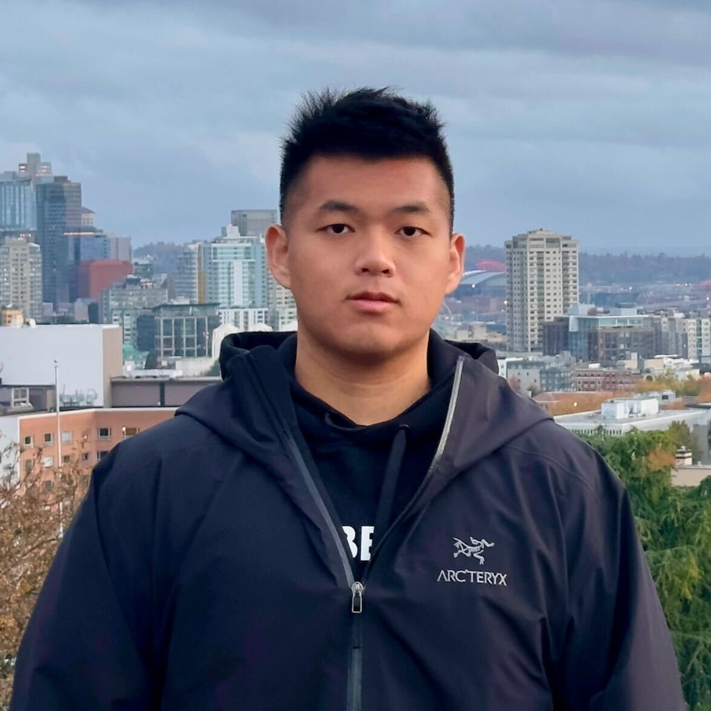
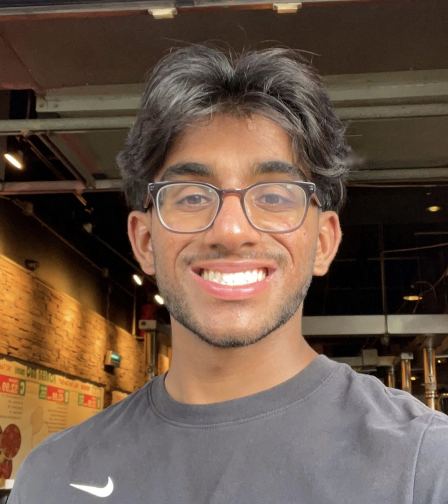
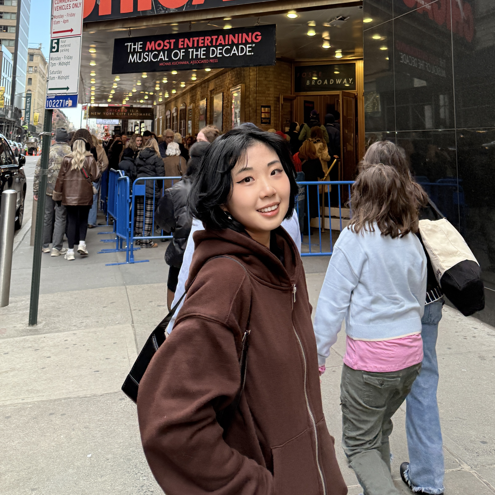
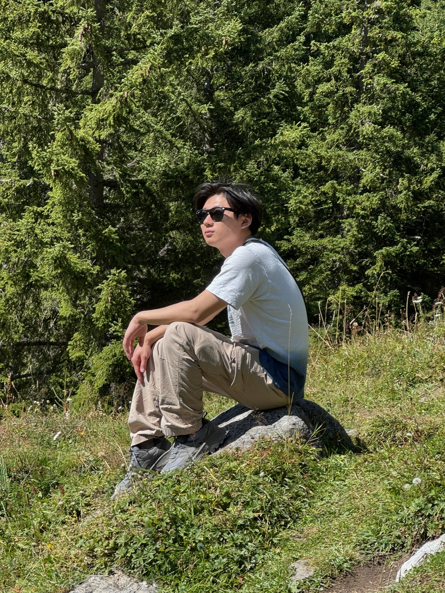
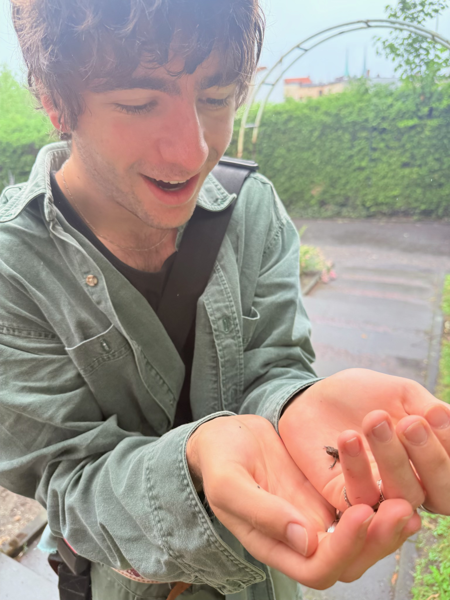
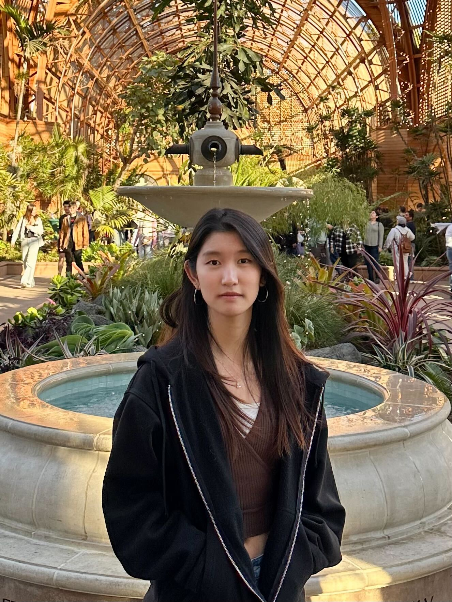
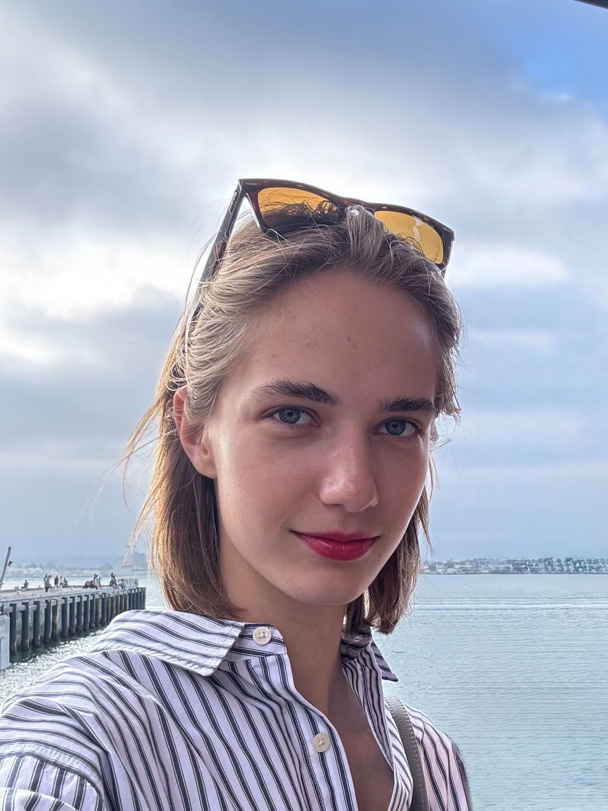
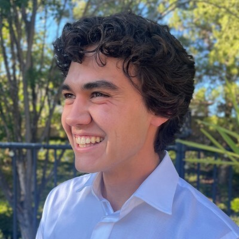

Staff 🧑🏫
Instructor
Marina Langlois
she/her/hers
malanglois@ucsd you know the rest
Hi, I am Marina and I am originally from Russia (not France!). I moved to Chicago to continue my education and I earned my PhD in Computer Science from UIC. Then I worked at Yeshiva University, NYC and then moved to San Diego. I was a member of CS department at first but moved to Data Science and I am loving it! I am excited to be your instructor for this quarter and you are welcome to stop by just to chat :)
Fun fact: I play ping pong!💃
Staff

Jiaen Yu
he/him/his
jiy037@ucsd.edu
Hi, I’m Jiaen! I’m a 2nd-year PhD student at HDSI. This is my first time TA’ing DSC 20, but I’ve previously TA’ed other data science courses. Outside of academics, I enjoy playing soccer and snowboarding. Looking forward to helping you this quarter!

Pengcen Jiang
she/her/hers
p5jiang@ucsd.edu
Hi everyone! My name is Pengcen. I’m a 4th year PhD student at HDSI. It’s my third time being a TA here and first time TAing DSC 20. Really excited to meet you all! In my free time, I like reading. I’m currently also practicing swimming.

Anisha Kalgi
she/her/hers
akalgi@ucsd.edu
Hi, I’m Anisha! I’m a second year data science major from Seattle, WA. This is my first time tutoring and I’m very excited! I will do my best in this position to help fellow students. I like swimming, rock climbing, cooking, and ranking new food spots on my Beli :). Looking forward to working with everyone!

Anish Kasam
he/him/his
akasam@ucsd.edu
Hi, my name is Anish, and I’m a fourth year data science major (math minor). I’m originally from the Bay Area (Dublin). In my free time, I like to read, run, hoop, and watch documentaries. This is my ninth time tutoring for DSC 20, and I look forward to working with you all!



David Goldstein
any
dgoldstein@ucsd.edu
Hi I’m David. I’m a third year DSC and Math/CS major. This will be my second time tutoring DSC20! Lately I’ve been finding fulfillment through Settlers of Catan, eating pupusas, and perusing the daily featured article on Wikipedia. I’m excited to spend the quarter with you and am always reachable via email!

Jacob Doan
he/him/his
j5doan@ucsd.edu
Hi, I’m Jacob. I’m a third-year data science major and an SD native. In my free time, I like gaming, lifting, running, getting a good kendo workout, or doing random DSC projects. I look forward to meeting and working with you all!


Praveen Sharma
he/him/his
p4sharma@ucsd.edu
Hi! I’m Praveen, and I’m a third-year data science and applied math major. In my free time, I enjoy playing ping pong, exploring new places to eat, and watching formula 1. This is my fourth time tutoring DSC 20, and I’m excited to work with y’all this quarter!

Suchit Bhayani
he/him/his
sbhayani@ucsd.edu
Hi, I’m Suchit. I’m a 3rd year from the bay area 🌉. In my free time I like lifting, UFC, NFL, NBA, college football, listening to music, and nature 🍃.

Ty Albao
he/him/his
talbao@ucsd.edu
Hi, my name is Ty and I’m a junior majoring in Data Science at Muir. My hometown is Temecula, CA, and in my free time, I love watching and playing football and baseball (Dodgers). Come out to College Ave on Sunday mornings or nights if you’re looking for a church in SD! This is my fifth quarter as a tutor for DSC 20 and I’m looking forward to seeing you in OH!
Yulin Chen
he/him/his
yuc093@ucsd.edu
Hi everyone! I am Yulin Chen. I am a fourth-year Data Science and Math-CS major student. This is my sixth time tutoring, and I am still really excited. I will do my best to help you and I am sure that you will enjoy the fun of DSC 20. During my free time, I like to play badminton and League of Legends. Looking forward to meet and work with you all!